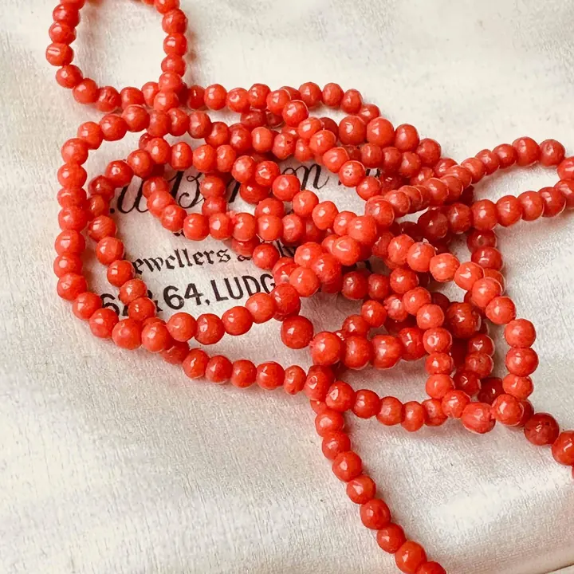

蜜蠟：不透明琥珀的溫潤哲學
蜜蠟把琥珀的透明變成溫潤的不透明——華人市場最愛的那種「蠟感」，其實是氣泡的傑作。

核心定義
蜜蠟（beeswax amber）是不透明或半透明的琥珀：樹脂在石化過程中混入大量微小氣泡，光線在氣泡間散射——透明琥珀變成溫潤的乳黃色。它與金珀是同源同質，只是「氣泡含量」不同。
蜜蠟在華人市場地位獨特：「雞油黃」（濃豔的雞油般黃色）與「老蜜蠟」（長期佩戴形成的包漿）備受追捧——蜜蠟是琥珀家族裡最「東方」的一支。
特徵與分類
| 名稱 | 透明度 | 特徵 |
|---|---|---|
| 金珀 | 透明 | 清透金黃 |
| 蜜蠟 | 不透明/半透明 | 乳黃溫潤 |
| 雞油黃 | 不透明濃黃 | 頂級蜜蠟 |
| 老蜜蠟 | 包漿醇厚 | 佩戴歷史感 |
蜜蠟的等級看：顏色（雞油黃＞檸檬黃＞鵝黃）、蠟感（濃郁不透明＞稀薄）、雕工與包漿（老蜜蠟的歲月感是加分）。「滿蠟」（全不透明）是蜜蠟的品質形容詞。
科學原理
蜜蠟的「蠟感」來自微氣泡：石化過程中樹脂包裹的氣泡（直徑微米級）密度高時，光線多重散射→不透明乳黃；氣泡少→透明。同一塊原石，透明與不透明區域並存很常見——「金包蜜」「蜜包金」就是這種漸層。
鑑定蜜蠟：比重浮鹽水、熱針松香、紫外螢光（蜜蠟螢光較強）；塑料仿蜜蠟的破綻：比重高（沉）、熱針刺鼻、紋理呆板（真蜜蠟有天然流動紋）。老蜜蠟的「包漿」是長期佩戴的油脂滲入與氧化——人工做舊可辨（打磨痕跡、染料）。
鑑定與鑑別方法
- 看蠟感：天然流動紋 vs 塑料呆板紋
- 鹽水浮：真浮假沉
- 熱針測試：松香 vs 塑膠味
- 紫外燈：螢光強弱
- 老蜜蠟看包漿：自然滲入 vs 人工做舊
市場行情與保養建議
行情熱潮：蜜蠟在華人市場持續火熱——雞油黃滿蠟單克價可達百元人民幣以上、老蜜蠟更因「歲月溢價」屢創高價。波羅的海蜜蠟是主流，俄料（部分氧化深色）與烏料（淺黃）各有擁護。
提醒：蜜蠟市場的塑料仿品與「烤色」處理（加熱加深顏色冒充老蜜蠟）高發——「老蜜蠟」三個字最需要證書與經驗。買蜜蠟，先認蠟感與流動紋，再談顏色與包漿。
常見誤區
蜜蠟就是琥珀（樹脂化石）——只是氣泡含量高、呈不透明。它與金珀同源同質，名稱差異是「透明度」的市場語言。
「烤色」工藝能把新蜜蠟烤成深色冒充老蜜蠟——深色可能是烤箱的作品。老蜜蠟要看自然的包漿與歲月痕跡。
冷知識
數不清的微氣泡把光線散射成溫潤的乳黃——蜜蠟的美，是「一肚子氣」的藝術。
長期佩戴，油脂與氧化在表面形成包漿層——那層溫潤的光澤，是時間與皮膚的合著。
反直覺觀點
西方偏愛透明琥珀的「清」，華人偏愛蜜蠟的「潤」——同一種樹脂，市場文化決定價格。蜜蠟的行情，是東方審美的勝利。
烤色、染色能把新蠟做舊——「老蜜蠟」的溢價越高，做舊的動力越大。歲月的痕跡可以偽造，鑑定的眼光才是防線。